Remove any rings, bracelets, or watches because they can trap germs and chemicals on your hands. You should leave off this jewelry during your shift to allow for frequent, proper handwashing whenever your hands may be soiled or contaminated.
Turn on the faucet. Use warm or cold water. Studies show water temperature makes no significant difference in germ removal. Warm water is usually preferred to create a rich lather, but it is not necessary. However, avoid hot water, as this may dry out your hands, causing your skin to crack.
Run your hands under the water to wet thoroughly.
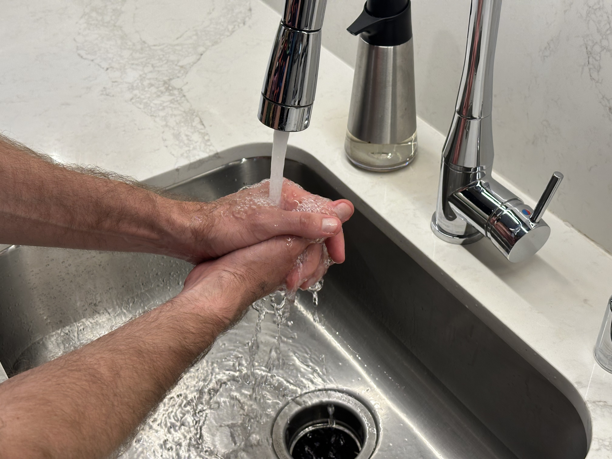
Remove your hands from the water as the faucet continues running. Place your hand under the soap dispenser.
Apply a quarter-sized portion of soap. Soap combines with water to create a lather, which is the key ingredient in removing germs and chemicals. If you think you need more soap to cover all your hand surfaces, you should apply more.
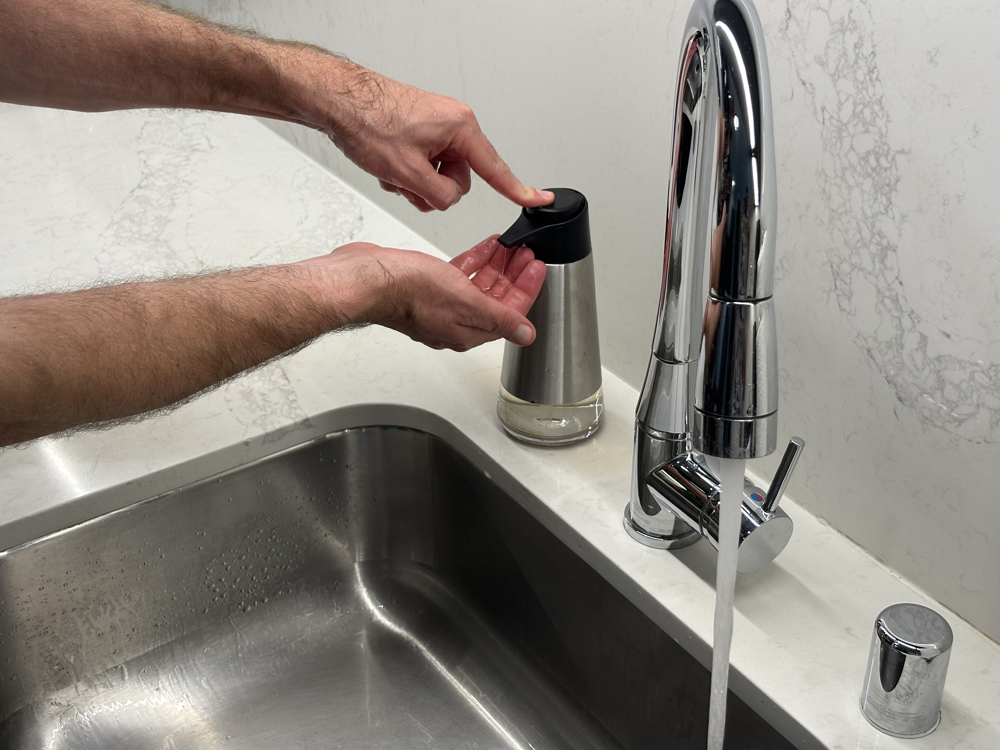
Prepare to lather your hands for 20 to 30 seconds over the next several steps. You can sing the "Happy Birthday" song twice if you are unsure how long you should scrub your hands.
Keep your hands out of the running water until all lathering steps are completed. Also, do not touch the faucet or sink surfaces from this point on to avoid contamination.
Rub the palms of your hands together for 5 seconds to create a rich lather. You can rub either back and forth or in a circular motion, whichever feels most comfortable. The important thing is to get the full surface of both palms lathered up.
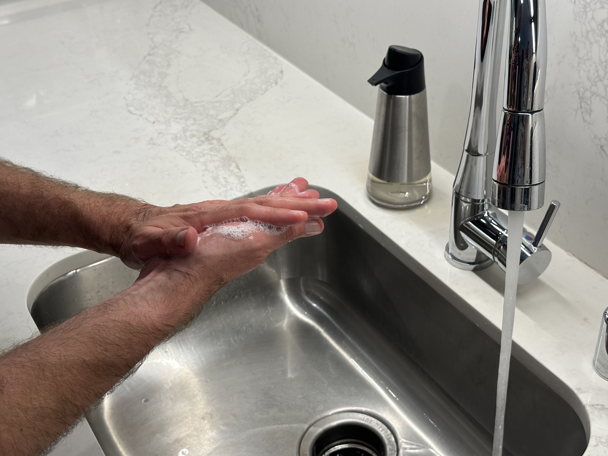
Place your right palm over the back of your left hand, and interlace your fingers.
Lather with right hand over left for 3 seconds. Use your right hand to rub forward and backward along the whole length of the left hand. Make sure that you lather in between the fingers as well.
Switch hands, and repeat. Continue lathering for 3 seconds with the left palm rubbing the back of your right hand. Do not forget to get in between your fingers.
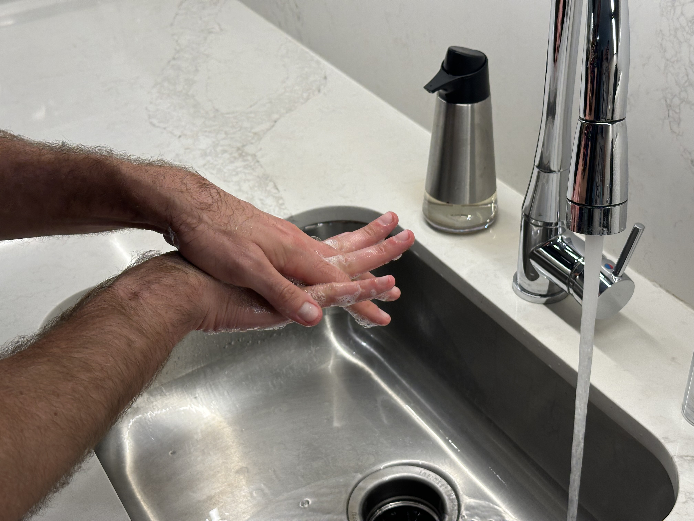
Place your palms together, and interlace your fingers. The underside of your fingers should be able to slide against the knuckles on the opposing hand.
Rub your hands up and down against each other for 3 seconds. Rub the hands so the full length of the fingers are cleaned.
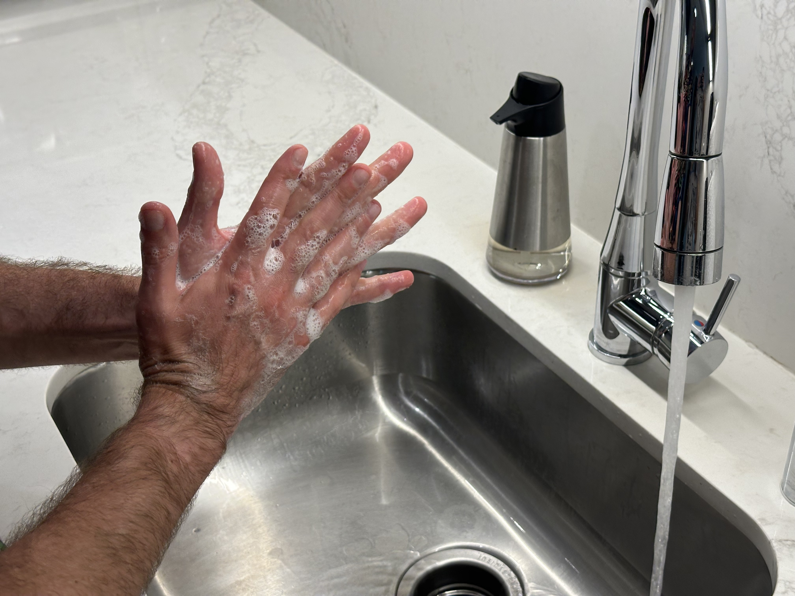
Curl your fingers on both hands, and interlock them together. As you interlock, the backs of the fingers should be touching the opposing palm.
Rub the backs of the fingers up and down for 3 seconds into the opposing palm. The palms should scrub the backs of the fingers.
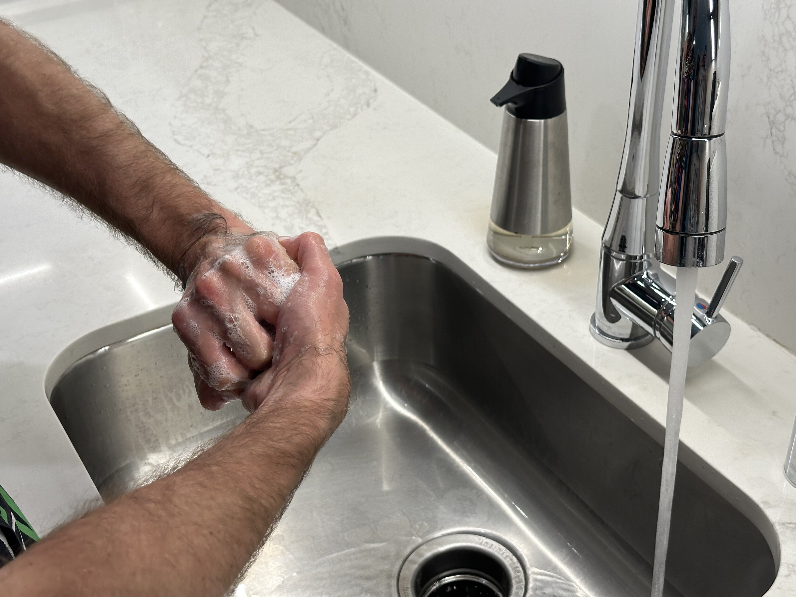
Clasp your left thumb in your right palm.
Rotate your right hand to scrub the left thumb for 3 seconds.
Switch hands, and repeat. Clasp your right thumb with your left palm. Rotate your left hand for 3 seconds.
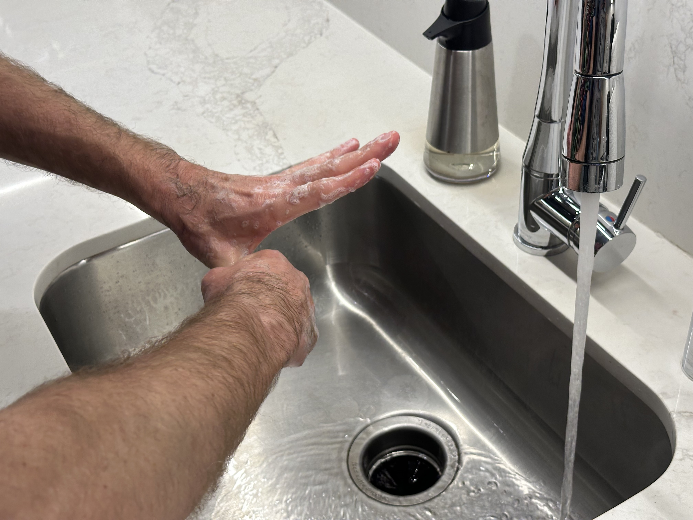
Clasp the fingers of your right hand.
Place the fingertips into the palm of your left hand.
Rotate your right fingertips and nails into your left palm for 3 seconds.
Switch hands, and repeat. Rotate your left fingertips into your right palm for 3 seconds. Remember, germs can get trapped under fingernails, so this step is critical. Nails should be kept short and clean prior to reporting to work.
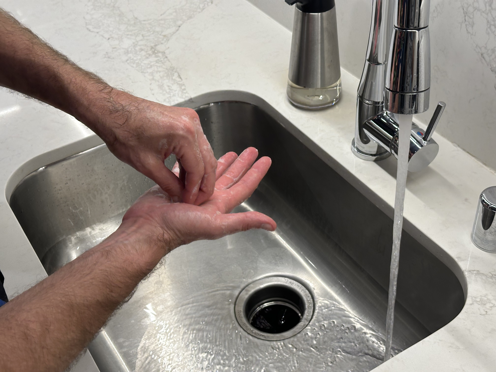
Rinse your hands for 20 to 30 seconds. Place your hands under the faucet's running water. Wash the soap away until the water is running clear under your hands. You also should not see any suds left on the surface of either hand.
Rinsing removes all germs and chemicals. Failing to rinse your hands thoroughly means that germs and chemicals may stay trapped on the skin's surface. Although it may seem like a long time to rinse, it is important to remove every last sud.
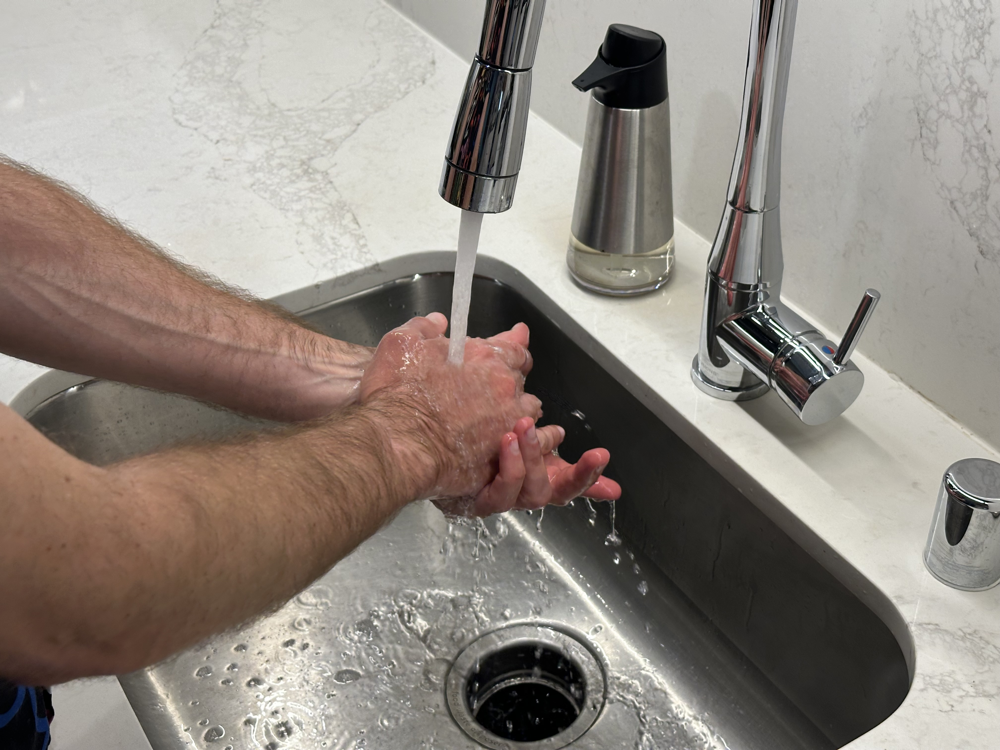
Grab a single-use paper towel. Be careful not to touch the paper towel dispenser as this is a potential source of contamination for your fully clean hands.
Dry your hands completely by rubbing the paper towel along all hand surfaces. Drying your hands provides two benefits. First, the mechnical act of rubbing the paper towel may remove any remaining germs from your hands. Second, any moisture left on your hands allows germ to grow and thrive, so drying prevents further spread of germs.
Do not throw away the paper towel after you dry your hands!
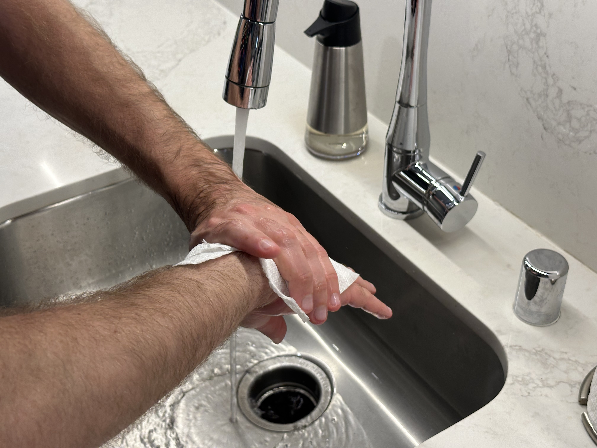
Grab the faucet handle with the paper towel to turn off the water. Be careful not to let your hands touch the handle directly as this is a potential source of contamination. If you accidentally touch the handle, you must begin washing your hands again. Throw the paper towel in the trash after you turn off the water.
Our patients' health and safety come first. We appreciate all staff being mindful of reducing waste by using a single paper towel. However, if you forget to hold onto your paper towel after drying your hands, please grab another paper towel to shut off the sink. Preventing infection and disease is our top priority.
Go to the CDC Hand Hygiene FAQ to learn more about topics not covered here, including hand sanitizers, wipes, and antibiotic resistance.
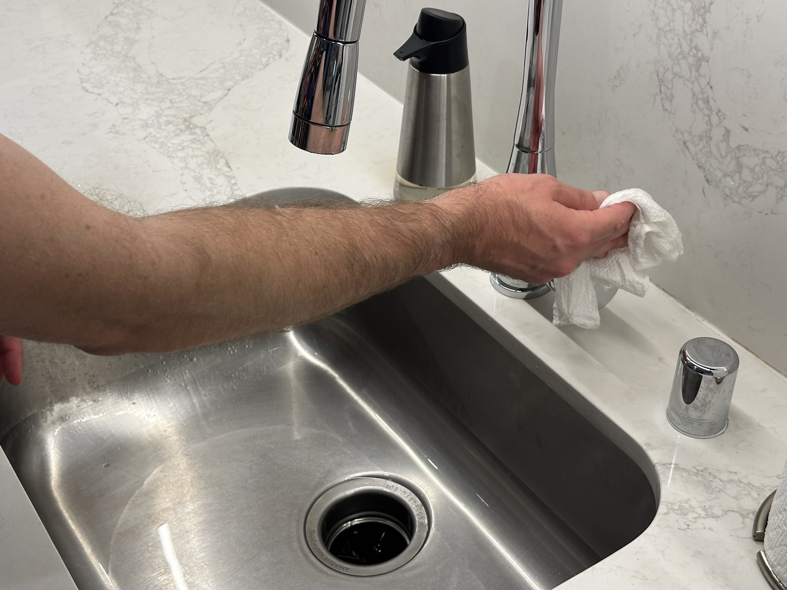